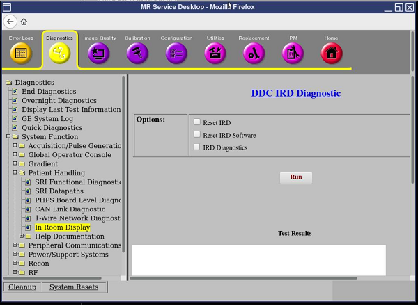
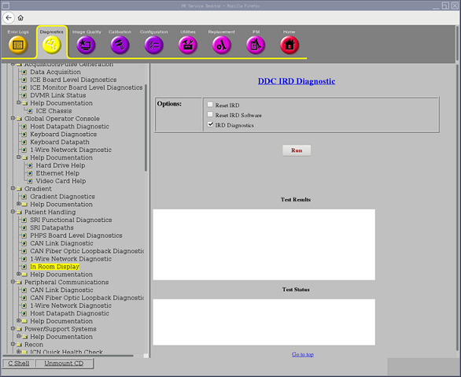
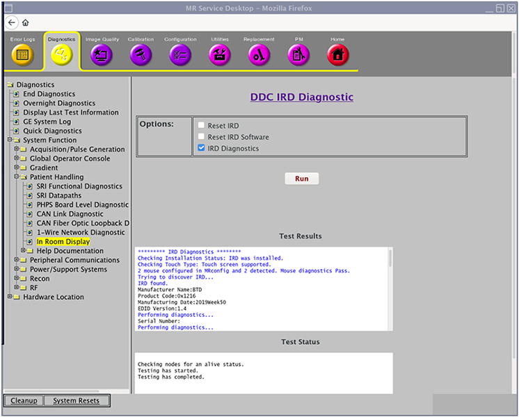
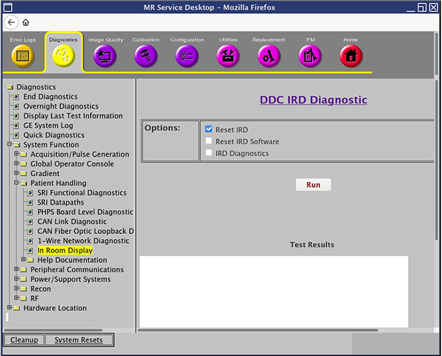
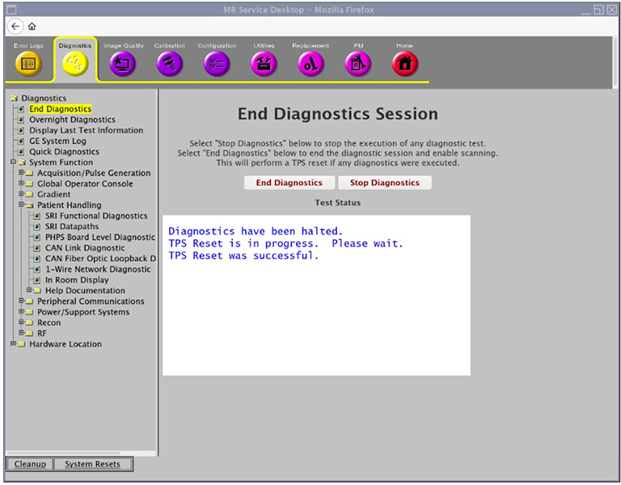

- 00000018WIA30C2BF80GYZ
- id_20384681.13
- Jul 28, 2025 5:31:13 PM
Doing the In-Room Display (IRD) diagnostic
The In-Room Display (IRD) diagnostic determines if the touch panels are detected by the host PC and obtains status information on the connectivity of the touch panel devices.
Diagnostic path

Purpose
This diagnostic determines the functionality of the IRD; for example, if the touch panels are detected by the host PC, verifying status information on the connectivity of the touch panel devices, and so on. It provides a mechanism to restart only the IRD without restarting the host PC.
The system may lose connectivity to the IRD display due to several causes:
- Replacement of the IRD console
- Reconnecting the USB fiber optic cables
- Reconnecting the DP cables
All communication for these diagnostic functions is over the USB fiber optic connection between the IRD on the front magnet enclosure and GOC.
Components tested
- IRD
- USB Fiber Optic Connection
- DP Cables Connection
Requirements
- IRD software must be installed.
Test sequence
- On the DDC IRD Diagnostic screen, select the IRD Diagnostics check box and click Run to determine the touch panel connectivity status:
Figure 2. Run IRD diagnostics 
Note If you select IRD Diagnostics and click Run, and the system does not respond, IRM software may not be installed. If the software is not installed, do the following:- Open Guided Install.
- Select IRM Installation.
- Click Install IRM Software.
- The diagnostic results appear:
Figure 3. Diagnostics results 
Table 1. Diagnostics results Result Description GE Field Action Passed IRD diagnostics No further action required Passed IRD software reset No further action required Passed IRD reset No further action required Failed 2 mouse configured in MRconfig but 0 detected. Check and connect the USB fiber optic cables Failed 2 mouse configured in MRconfig but 1 detected. Check and connect the USB fiber optic cables Failed Configured IRD number is 2 and detected is 0. Check and connect the DP cables Failed Configured IRD number is 2 and detected is 1. Check and connect the DP cable Failed 15V Power:Fail. Below LSL. IRD diagnostics is completed with 1 failures on this screen.
Check power supply and cables Note For any failed condition, see Troubleshooting the In-Room Display (IRD). - Check the conditions.
- If there is no power or if there is any problem associated with power, see Make sure the IRDs have power in Troubleshooting the In-Room Display (IRD).
- If IRD diagnostics indicate that the touch panels are detected, and you are able to move the pointer on the IRD touch panels, there is no issue on IRD. No further steps are required.
- If the IRD diagnostics indicate that the touch panels are detected, but you are unable to move the pointer on the IRD touch panels, select the Reset IRD check box and click Run to restart the IRD. Wait 2 minutes until the IRD appears. Then, check that the IRD is functioning and both touch panels move the pointer on the IRD.
Figure 4. Reset IRD 
- If the IRD diagnostics indicate that the touch panels are not detected, see Troubleshooting the In-Room Display (IRD).
- To end the diagnostic session and enable scanning, click End Diagnostics. If any diagnostics were completed, this will force a TPS Reset.
Figure 5. End Diagnostics Session screen 
Results
The IRD is reset and the touch panel function works to move the cursor on the IRD.